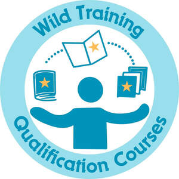

Trade Mark Journal No.2026/008 20 February 2026
UK00004333858 2 February 2026 (41)

- Class 41
- Accreditation of professional competency; Providing training and educational examination for certification purposes; Accreditation [certifying] of educational achievement; Organisation of examinations to grade level of achievement; Provision of skill assessment courses; Certification in relation to educational awards; Educational certification services, namely, providing training and educational examination; Vocational skills training (Provision of -); Preparation of educational courses and examinations; Vocational training courses (Provision of -); Consultancy relating to vocational skills training; Organisation of examinations [educational]; Training relating to employment skills; Provision of educational examinations; Provision of training courses in personal development; Provision of facilities for employment skills training; Education examination; Vocational skills training; Provision of training and education; Provision of education and training; Development of educational courses and examinations; Provision of educational examinations and tests; Provision of training courses; Training courses (Provision of -); Consultancy services relating to the analysis of training requirements; Employment training; Organisation of training courses; Provision of training courses for young people in preparation for employment; Vocational training; Career and vocational training; Educational examination; Education and training consultancy; Education and training; Organisation of conferences relating to vocational training; Provision of training; Provision of education courses; Awarding of educational certificates; Training and further training consultancy; Accreditation of educational services; Educational courses (Provision of -); Training relating to employment opportunities; Advanced training; Provision of information and preparation of progress reports relating to education and training; Vocational education relating to first aid; Provision of training courses for young people in preparation for careers; Organisation of training; Vocational education and training services; Training courses; Education, teaching and training; Consultancy services relating to the development of training courses; Setting of training standards; Review courses for state examinations; Educational examination services; Examination services (Educational -); Provision of medical instruction courses; Provision of training courses for young people in preparation for vocations; Organisation of seminars relating to training; Academic examination services; Vocational training services; Arrangement of training courses in teaching institutes; Vocational testing; Provision of educational courses relating to diet; Training consultancy; Personal development training; Training and education services; Education and training services.
Lorah Wild